Connecting Billions
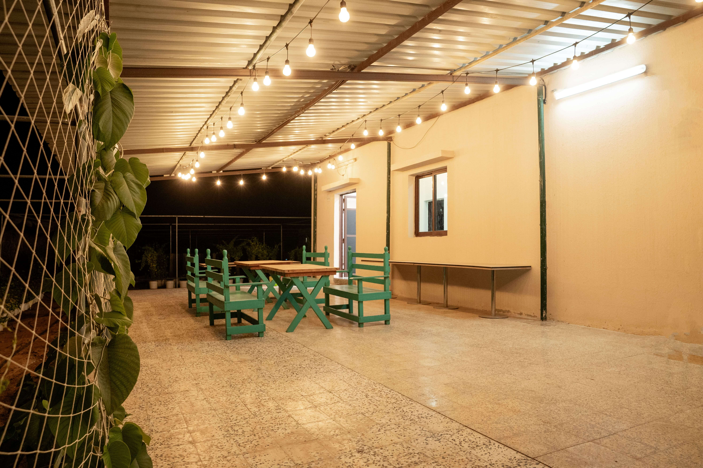
Designed for those seeking calm, freshness and connection with nature. Eco Paradise offers a sustainable and serene environment away from city noise—ideal for families, friends and nature lovers.
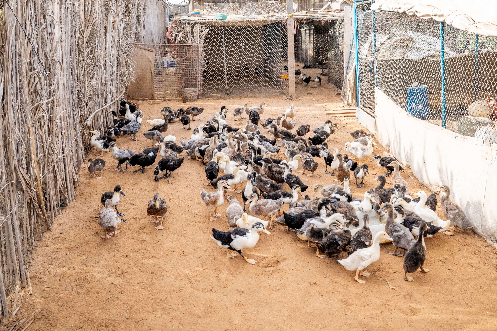
Ducks add life and charm to the natural countryside atmosphere.
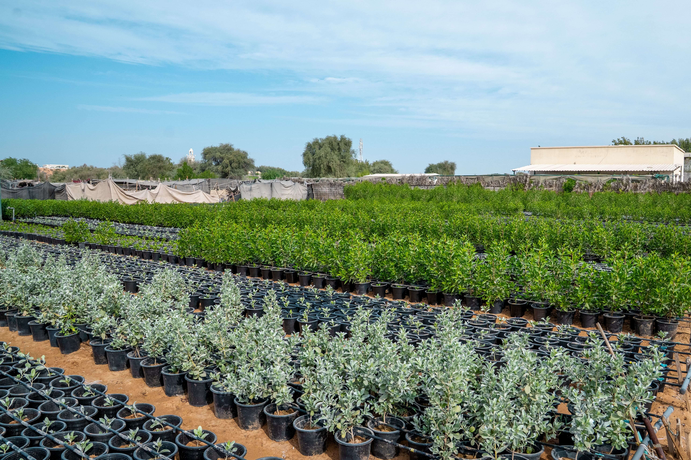
Lush green plants and colorful flowers growing in a well-maintained garden.
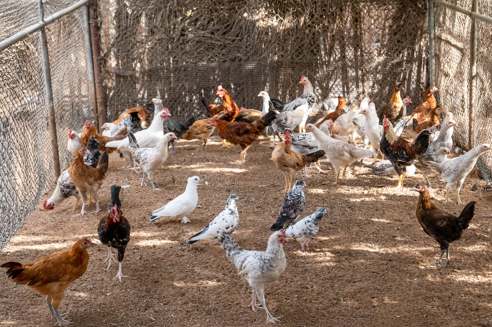
Hens reflect fresh, organic and traditional farm living.
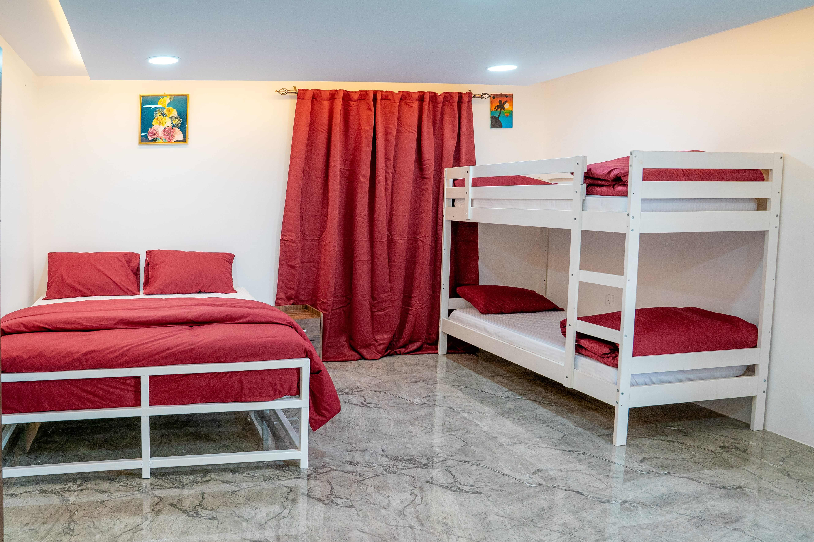
Designed to provide a relaxing and peaceful stay.
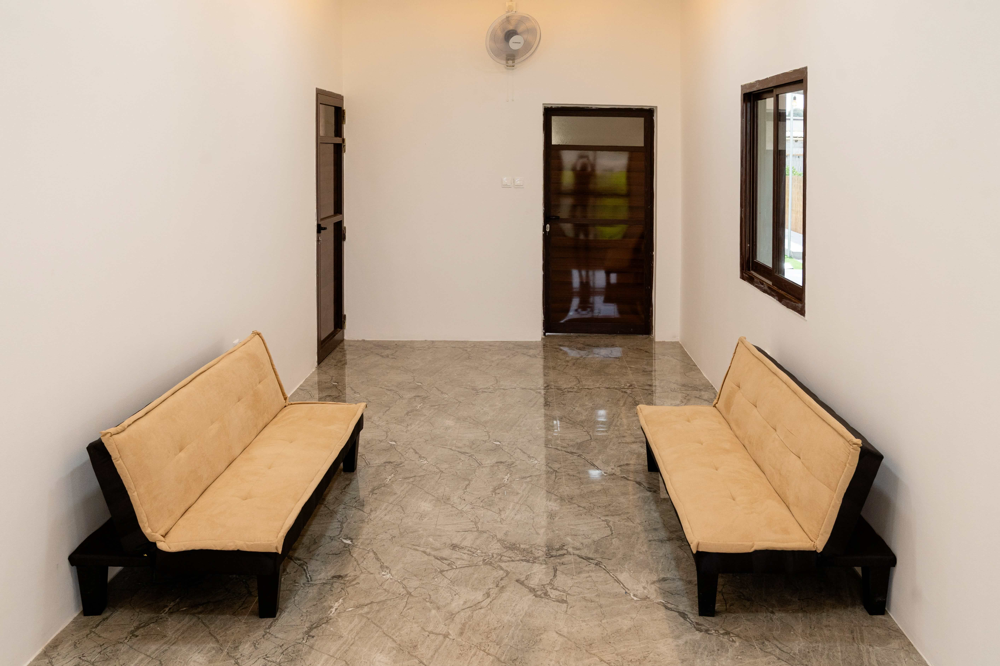
Comfortable and well-maintained rooms with a cozy ambiance.
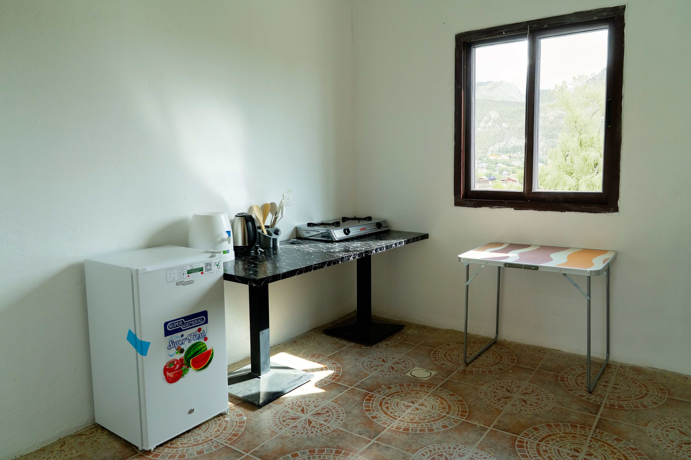
Guests have easy access to a clean and well-equipped kitchen.
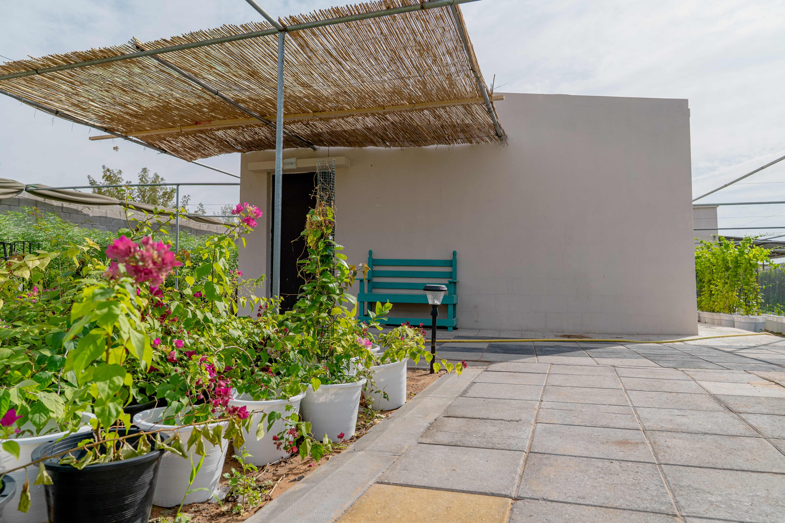
Perfect for relaxation and fun with family and friends.
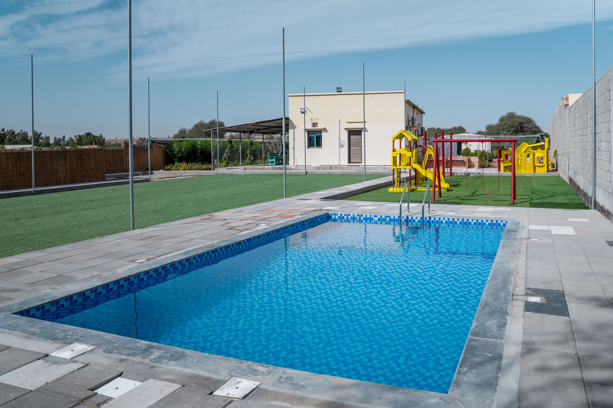
A clean and refreshing swimming pool surrounded by greenery.
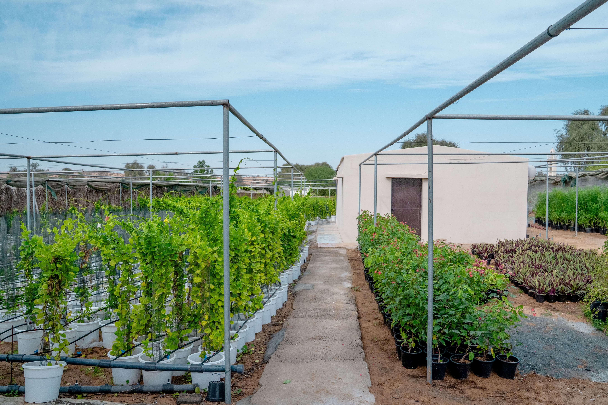
A peaceful space that promotes relaxation and a close connection with nature.
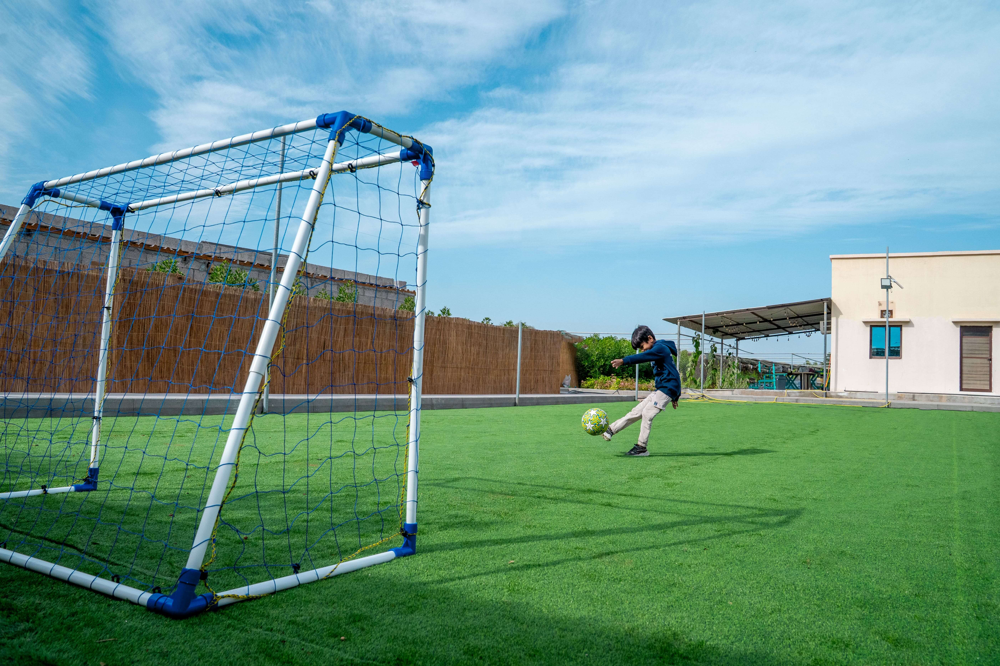
A spacious playground designed for both kids and adults to enjoy.
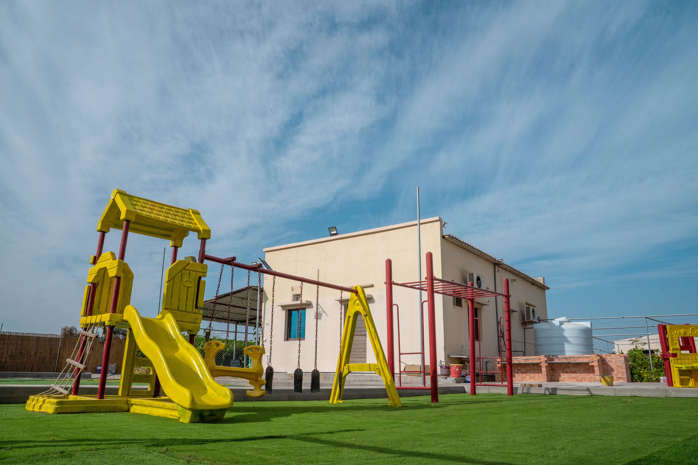
Ideal for outdoor games, fitness and family bonding time.
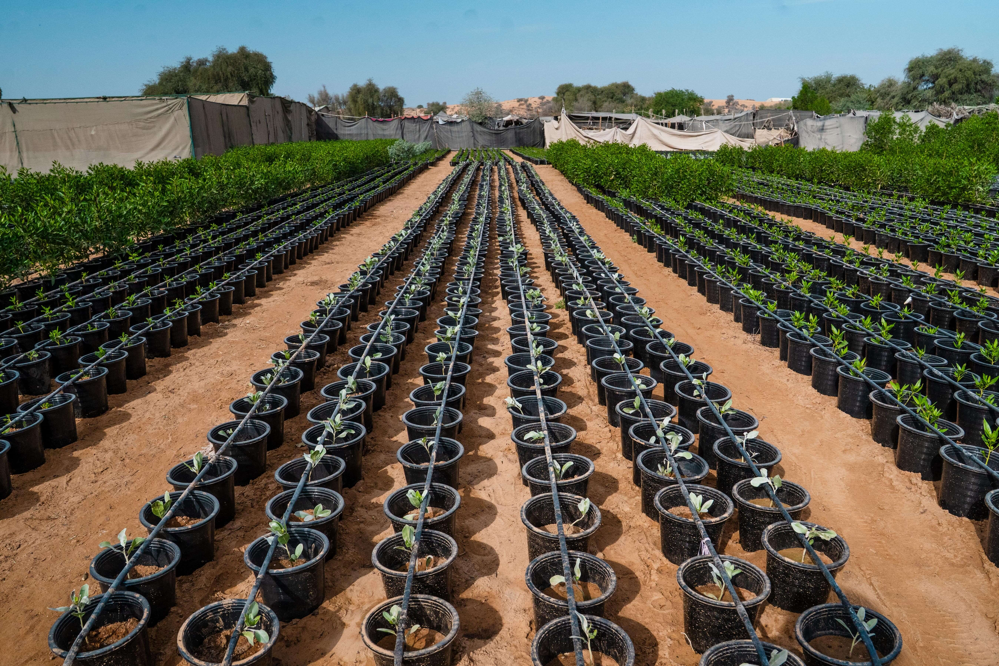
Perfect blend of relaxation, nature and farm life
Our rooms are designed to blend comfort with the beauty of nature and farm life. Surrounded by greenery and fresh air, they offer a calm and relaxing space where guests can wake up to birdsong and enjoy peaceful views of the farm, ensuring a restful and refreshing stay.
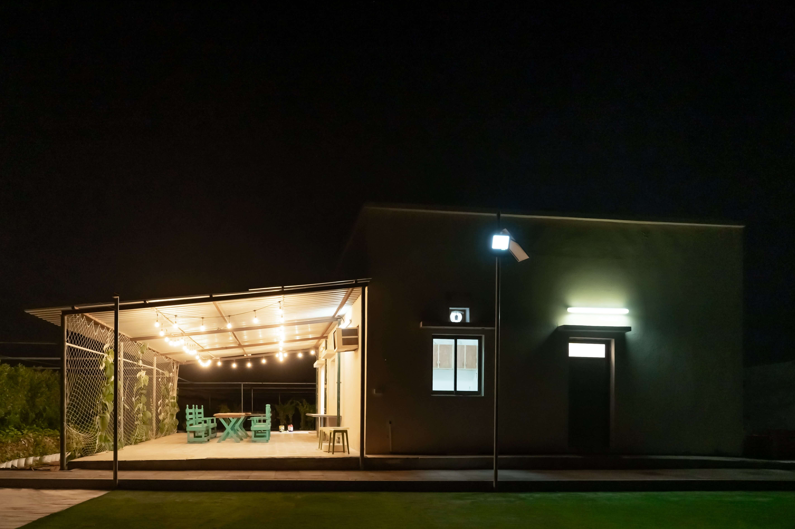